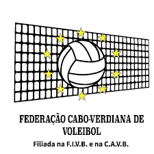

Federação Cabo-Verdiana de Voleibol
A Federação Cabo-Verdiana de Voleibol é uma organização fundada em 1988 que governa a pratica de voleibol em Cabo Verde, sendo membro da Federação Internacional de Voleibol e da Confederação Africana de Voleibol, a entidade é responsável por organizar os campeonatos nacionais de voleibol masculino e feminino no país.